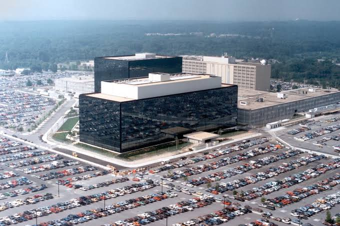
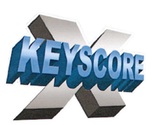
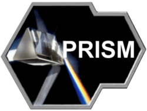
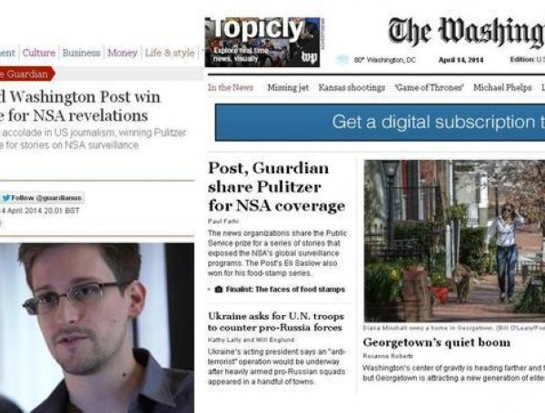

Luego del atentado del 11 de septiembre de 2001, el gobierno de Estados Unidos comenzó a implementar programas de vigilancia masiva, incluyendo PRISM, que permitía a la NSA acceder a datos de usuarios de grandes compañías tecnológicas.


Cresio rodeado de tecnoligia y amor por su patria por sus padres que trabajaban en en ambito tecnologico y espionaje. Edward Snowden trabajó en varias instituciones del gobierno.
